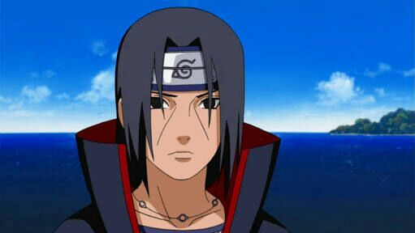
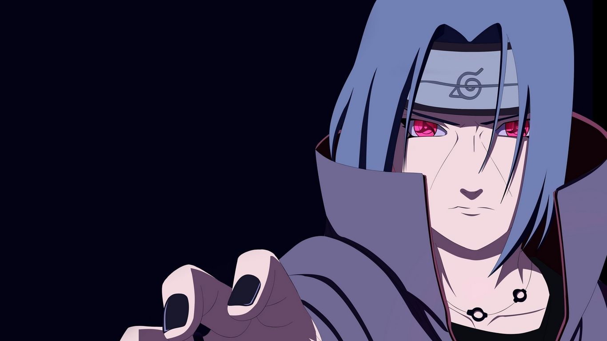
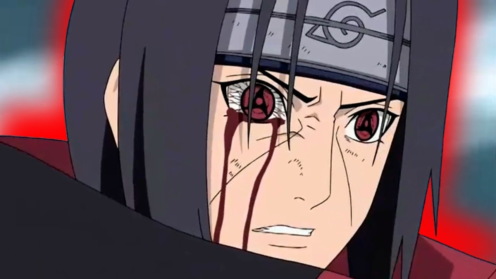

Itachi fue el primogénito de Fugaku Uchiha, cabeza del Clan Uchiha. Itachi fue considerado un genio desde muy pronta edad; despertó el Sharingan a los 8 años, se graduó como el primero de su promoción y fue nombrado capitán de las unidades ANBU a los 13. Por todo esto, Itachi se convirtió en el hijo predilecto de Fugaku y en centro de atención de toda Konoha.
Itachi mantenía una relación muy cercana con su hermano pequeño Sasuke, el cual le veía como modelo a imitar y que sentía una cierta envidia de él. Sin embargo, conforme Itachi se introducía más en los ANBU y el Clan Uchiha se enemistaba cada vez más con el Consejo de Ancianos de Konoha, sus relaciones se volvieron más frías.
El Clan Uchiha planeó entonces un golpe de estado para hacerse con el control de Konoha y querían que Itachi actuara de espía, gracias a su posición privilegiada de capitán de los ANBU. Sin embargo, Itachi decidió permanecer leal a Konoha y actuó de doble-espía, informado al Tercer Hokage sobre los movimientos de su clan. En cierto momento, Danzō Shimura decidió darle a escoger una opción a Itachi: eliminar a su clan y proteger Konoha de un enfrentamiento civil, o unirse a su clan y ser eliminado junto a ellos. Itachi se encontró también con Tobi (haciéndose pasar por Madara Uchiha), con el cual hizo el trato de eliminar al Clan Uchiha siempre y cuando Madara no volviese a atacar Konoha. Esa misma noche, Itachi asesinaba a todo su clan, incluyendo a sus padres. El pequeño Sasuke lo observó e Itachi le replicó que únicamente lo había hecho para probar su poder, y que si llegado el momento quisiese vengarse, tendría que hacerse mucho más fuerte y obtener el Mangekyō Sharingan, igual que hizo él.
Itachi deja la aldea como un traidor y decide unirse a los Akatsuki, la más peligrosa organización de criminales, aunque con la intención de infiltrarse dentro de ella y proteger Konoha. En un primer momento hizo equipo con Orochimaru, pero éste le atacó para hacerse con su Sharingan, cosa que no consiguió. Tras la deserción de Orochimaru, Itachi comenzó a hacer equipo con Kisame Hoshigaki, con el que llegó a mantener una relación de confianza y respeto.
Como todo Uchiha, Itachi posee un Sharingan; técnica ocular con la que es capaz de copiar todo tipo de técnicas de sus enemigos, logrando anticiparse a los movimientos del contrario y verlos por muy rápidos que sean. Madara Uchiha le dijo a Itachi que había un poder más elevado que el Sharingan normal, Mangekyō Sharingan, pero que lo obtendría con una condición: asesinar a su mejor amigo. Como es dicho en la serie por Madara,  Itachi ve morir a Shisui Uchiha y de esta forma hace que el Sharingan avance a su siguiente nivel: el Mangekyō Sharingan. Cuando lo activa, el Mangekyō Sharingan cambia totalmente la apariencia del Sharingan y le concede a Itachi habilidades derivadas de la mitología japonesa.
Amaterasu (天照?), genera llamas negras en el punto focal que arden a la temperatura de la superficie del sol y que no se extinguen hasta haber incinerado y destruido totalmente su objetivo; y aunque no se demuestra Itachi puede apagar las flamas de Amaterasu sin tener efectos negativos, a diferencia de Sasuke.